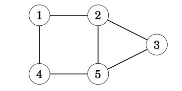
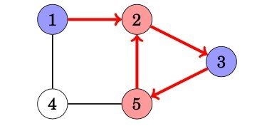

Using the BFS, we can check many properties of graphs. Usually, both depth-first search and breadth-first search may be used, but in practice, breadth-first search is a better choice, because it is easier to implement. In the following applications we will assume that the graph is undirected. (WLOG we can apply the same ideas on directed graphs too)
A graph is connected if there is a path between any two nodes of the graph. Thus, we can check if a graph is connected by starting at an arbitrary node and finding out if we can reach all other nodes.
A graph is bipartite if its nodes can be colored using two colors so that there are no adjacent nodes with the same color. It is surprisingly easy to check if a graph is bipartite using graph traversal algorithms.
The idea is to color the starting node blue, all its neighbors red, all their neighbors blue, and so on. If at some point of the search we notice that two adjacent nodes have the same color, this means that the graph is not bipartite. Otherwise the graph is bipartite and one coloring has been found. For example, the graph,

is not bipartite, because a search from node 1 proceeds as follows:

We notice that the color or both nodes 2 and 5 is red, while they are adjacent nodes in the graph. Thus, the graph is not bipartite.
This algorithm always works, because when there are only two colors avail- able, the color of the starting node in a component determines the colors of all other nodes in the component. It does not make any difference whether the starting node is red or blue.
Note that in the general case, it is difficult to find out if the nodes in a graph can be colored using k colors so that no adjacent nodes have the same color. Even when k = 3, no efficient algorithm is known but the problem is NP-hard.
In an unweighted graph, the shortest path is the path with least number of edges. With Breadth First, we always reach a vertex from given source using the minimum number of edges. Also, in case of unweighted graphs, any spanning tree is Minimum Spanning Tree and we can use either Depth or Breadth first traversal for finding a spanning tree.
Crawlers build index using Breadth First. The idea is to start from source page and follow all links from source and keep doing same. Depth First Traversal can also be used for crawlers, but the advantage with Breadth First Traversal is, depth or levels of the built tree can be limited.
In social networks, we can find people within a given distance ‘k’ from a person using Breadth First Search till ‘k’ levels.
This article is contributed by Aatif Rashid
So that’s it for this article we will be coming up with our next article on further topics of Graph Theory very soon till then keep learning, keep coding, keep reading and keep improving !!
Happy Coding
By Programmers Army 😊